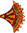
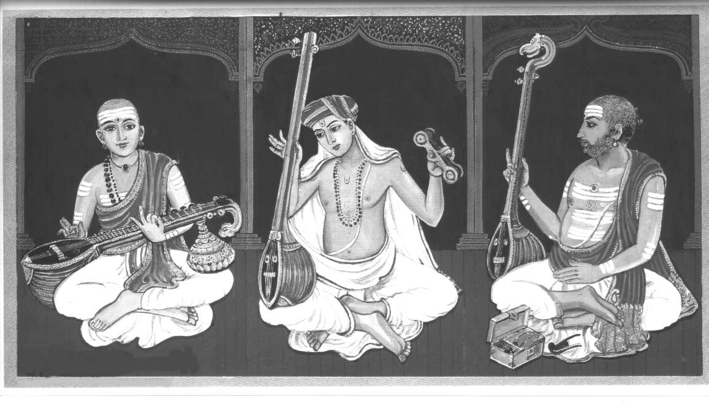

|
HOT LINKS
Carnatic.com
Why
Carnatic music ?
Sruti
Magazine
Sangeetham.com
Sri
Muthuswamy Dikshitar
Carnatica.com
CarnaticCorner.com
Chembai
Vaidyanatha Iyer
KUTCHERI
BUZZ
CARNATIC MUSIC
FESTIVALS
Cleveland
Tyagaraja festival
Chicago
Tyagaraja Festival
COMMUNITY LINKS
|
 |
Carnatic
Music Traditions :
Who
are the Trinity ?
The trinity consisted of the three greatest composers of Carnatic Music
shown in the picture below. The first is Sri Muthuswamy Diskshitar, the
youngest of the trio. The next is Sri Thyagaraja and last but not least
is Sri Shamashastri.Of the monumental compositions left to us as a legacy
by the immortal MUTHUSWAMI DIKSHITAR , the NAVAVARNA
KIRTANAS constitute an important group.It is because of his qualitative
excellence that Syama Sastri has gained a secure and luminous place among
the makers of modern Carnatic music, though his contribution has not been
much quantitatively.While all his kirtanas are soulful, Sri Thyagaraja
has outclassed himself in his Pancharatnas where he is at his greatest
and perhaps touched the pinnacle of Carnatic music.

The
basic concepts :
A composition in Carnatic music is a piece of music set in a particular
ragam and talam. The ragam is a form of melody and the talam is the organization
of beats according to predefined rules. Most Carnatic compositions are
made up of three distinctly identifiable sections: Pallavi, Anupallavi
and Charanam. A section called chittaswaram, which normally follows the
anupallavi, can augment certain compositions. Some of the major types
of compositions are: varnam, kriti, keertana, and tillana. Some of the
instruments used in a Carnatic music concert are the violin, veena, gottuvadhyam,
mridamgam and the tampura.
The
Melakarta Scheme :
Carnatic music is based on a system of 72 melakarta ragas. These 'creator'
ragas are also called janaka ragas and thai (mother) ragas Melakarta ragas
use the seven notes Sa Re Ga Ma Pa Dha Ni in both ascending (arohana)
and descending (avarohana) order.
|

{kind=link}